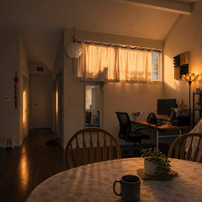

For six weeks, a borrowed home develops its own quiet rhythm. With the owner away, two cats keep watch from different corners of the house: one visible in the window, the other just beyond the narrator's line of sight. Their routines continue, whether anyone is watching or not.
“The Silent Observer” is a song about the quiet patterns we notice when we spend enough time in one place. Nothing dramatic happens, and nothing needs to be explained. One presence is seen; the other is simply known to be there. Together, they become part of a temporary world that feels familiar for a while, then belongs to someone else again.
Some stays leave stories to tell. Others leave only the memory of having briefly fit into a life that was never quite our own.
Third tour on duty, same code, same space, Morning light settling into the place Six weeks of routines, of water and feed, Quiet little motions that nobody reads Likui in the high window, sharp and still, Watching the block with a patient will Bathroom window, Bao takes his post, Watching the side path like it matters the most Traffic of shadows, a leaf, a bird, All of it noted, none of it heard I don't see him, but I know where he stays, The house has its patterns in invisible ways Two guards on duty while the owner's away, Keeping the rhythm of an ordinary day One in my sightline, one out of frame, Both doing quietly what they claim Nothing is broken, nothing is new, Just the way houses know what to do Four weeks completed, two still remain, Same quiet circuits run through the frame I sit on the sofa, phone in my hand, Half paying attention, half trying to understand Likui above me, Bao out of view, One seen clearly, one known to be true One trusts nothing, one trusts the air, One never leaves, one is never there Two different angles on the same small world, One seen directly, one only heard No explanation, no need to decide, Just shifting shadows on either side Two guards on duty while the owner's away, Keeping the rhythm of an ordinary day One in my sightline, one out of frame, Both doing quietly what they claim Nothing is broken, nothing is new, Just the way houses know what to do Soon you'll return and the system will close, Windows will settle, the patterns will fold Likui at height and Bao off the line, Restoring the order that once was mine I leave no report, no verdict, no sign, Just six borrowed weeks that briefly aligned The house stays silent, the record stays true— Two guards on duty I hand back to you